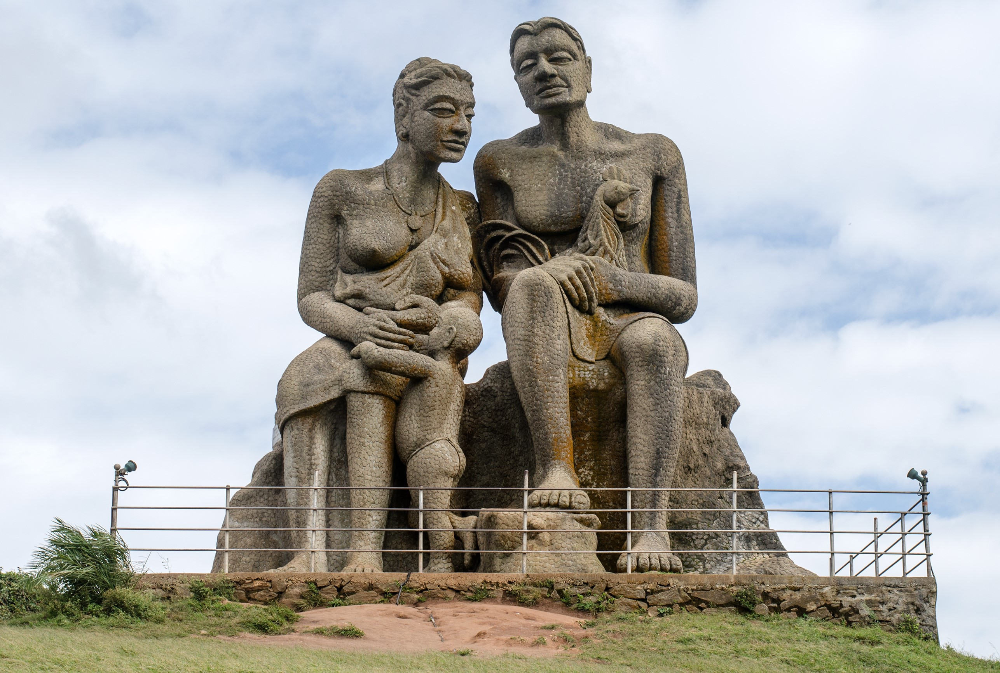

Idukki, a landlocked district of Kerala, is one of the most nature-rich areas in Kerala with more than half of the area covered with forest. This rugged hill resort is known for its wildlife sanctuaries, beautiful bungalows, tea factories, rubber plantations and forests. Idukki's speciality lies in 650 feet long and 550 feet high arch dam across the Kuravan Kurathi mountain, which is the largest in the country. Anamudi, which is the highest peak in India, south of the Himalayas, is also located in Idukki. Idukki is one of the districts in the state that has abundant scope for promotion of eco-tourism if proper infrastructure and promotional activities are provided.
With spectacular views of the Cheruthoni and Idukki Dams, the Hill-view Park serves as a famous tourist destination of Idukki. One can also spot diverse wildlife in its belt natural habitat.
If you're a hiking or trekking junkie, Kulamavu is a hill-station that offers the perfect terrain for an adrenaline kick. With some amazing trekking trails, the place is also adorned with equally enchanting surroundings.
Famous for its Tiger reserves and thick vegetation, the Periyar National Park is a perfect place for nature buffs and wildlife lovers. However, the best way to explore this natural habitat is by safaris either on jeep or elephants.
17 km off Thodupuzha lays this captivating Thommankuthu Falls, which is a seven step waterfall cascading down to form a pool. The location is best suited for trekking and rock climbing. Besides, facilities for many other activities such as boating, horse riding and fishing are also available.
Located at an altitude of 1337 m above sea level, the Mangala Devi temple is a well known pilgrimage centre of the region. The temple is dedicated to a local deity Mangala Devi who commands great reverence.
The second highest peak in South India, Meesapulimala is an ideal spot for trekking. The starting point of the trek is either Rhodovalley or Silent Valley which lies 6 km before Rhodovalley. After trekking for about 8 km from Rhodovalley, one gets to witness the grasslands, wildlife, rainforests, and small waterfalls.